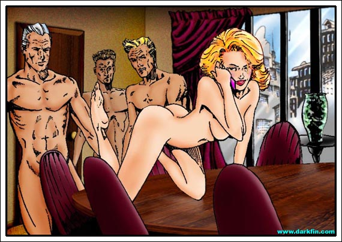
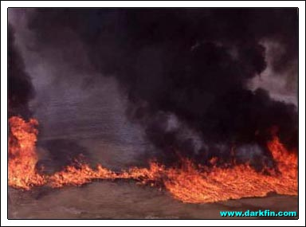
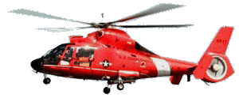
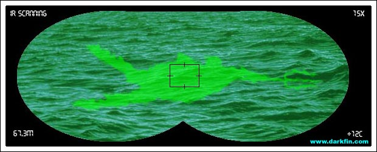
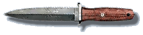

Kylee (Wiping her face) Excuse me for a moment, gentlemen
Kylee Yes? - Dammit, Turner, now is NOT a good time - look, I'm right in the middle of something... literally - no, I do not know what's happening in Duquesa Bay, I'm on the other side of the fucking country, and unless it's a 7.0 with the epicenter in downtown Santa Conchita, I could care less... wait a minute, wait a minute, calm down - what is going on? - HOLD ON
Kylee Mr. Anderson, I can't really do that and talk on the phone at the same time, you're going to have to entertain yourself for a moment... so, Turner, you're telling me we have bodies washing up on shore, a train wreck, and oil seeping into the river in one day? - when did Satan let all Hell break loose? - what about that new reporter, I thought you were getting her to cover for me - SHE WHAT? - OH MY GOD - well, isn't that just PERFECT... give me a little longer to come to terms with the network boys, once we close the deal, I'll be on the next flight... OK, bye!
Kylee Now, where were we?
Anita (Fighting for control) SON OF A...
Craig YOU GOT IT, ANITA, HOLD ON, KEEP IT STEADY
Anita (Leveling off) WHERE IN THE HELL THAT COME FROM?
Craig (Into his radio) WHO GAVE THE ORDER TO LIGHT IT?
Anita DEAR GOD, MCBRIDE WAS HEADING BACK FOR THE TRAIN WHEN IT WENT UP
Craig FORGET HER, SHE'S NOTHING MORE THAN A CINDER, WE'VE GOT TO CONCENTRATE ON GETTING THIS THING UNDER CONTROL - NOW, WHO GAVE THE GOD DAMN ORDER TO LIGHT THIS?

Voice No one gave any orders to begin the burn, Captain - it just kinda happened on its own
Craig BULLSHIT, IT DOESN'T JUST HAPPEN ON ITS OWN, SOMEONE SPARKED IT
Anita I have a bad feeling I know EXACTLY who did
Craig So HELP me, if your nature-freak brother-in-law or any of his lab buddies are involved in this...
Anita (Clenching her teeth in anger) ALETA OSCURA
Craig I think the fumes have GONE TO YOUR HEAD, LIEUTENANT
Anita At least I don't have my head up my ASS... sir
Craig WHAT DOES THAT MEAN?
Anita I said it in plain English, not Español
Craig We'll take this up again later, Fiore - right now, we need to track where the new smoke is headed, wind speed, AS WELL AS, come up with a way to protect our necks once the higher ups come looking for a scapegoat - and if you say LAYTO OSKERBA again, I will THROW you out of this chopper!
Anita Craig, save yourself the embarrassment and just call her "Darkfin" from now on
Gracie Where is she, Eyes, where's Morrigan?
Gracie (Shaking him) I SAID, WHERE IS SHE? - ZACH, ANSWER ME, WHERE IS SHE?
Zach (Voice wavering) I think she's dead, Gracie - I... I told her not to go back - some guy... she went... I don't... I told her...
Gracie (Crying) SHIT, SHIT SHIT SHIT, I DO NOT BELIEVE THIS IS HAPPENING
Shelby (Checking her pager) Where in the world is Erika? - I thought for sure she'd be the first one here
Javier She's probably stuck in traffic, the 101 is completely shut down and Riverbank is a total mess
Shelby I heard from one of the firemen that some reporter got caught in the explosion
Javier Yet another tragedy, I'll be glad when this day is finally finished
Shelby (Looking out over the water) I hate to say it but this fire is a godsend
Javier (Pulling a bag of cashews out of his pocket and snacking on them) Yep, this was shaping up to be one colossal nightmare
Shelby Those government buffoons cannot be counted on to do anything right!
Javier (Looking up at Anita's helicopter) You know as well as I do how protocol bound they are, gotta get a triplicate order to use the toilet
Shelby Would you be defending them if your sister-in-law weren't one of them, Dr. Sanchez?
Javier Excellent observation, Dr. Willis!
Shelby Hmm
Javier (Looking embarrassed) Is now really the right time for you to be doing your Santeria?
Shelby It's "Ocha" to me and it is indeed the right time, I am giving thanks to Olorun for preventing the death of this great river
Javier (Rolling his eyes) Ah
Shelby You have your beliefs, I have mine!
Heather Hey Sandy, I'm done collecting my samples, the others should be done soon too
Javier (Squeezing her shoulder) Thank you, Heather, you and the other students are an immense help!
Heather (Giggling) Hi, Dr. Willis, I loved your lecture in class yesterday
Shelby Really? - and what part in particular did you find most fascinating?
Heather Um... all of it was very cool!
Shelby (Sideways glance at Dr. Sanchez) Mm-hmm
Heather (Smiling coyly at Dr. Sanchez) Well, I think I'll take these back to the lab and get started on them
Javier I'll come by later to get your analysis
Heather (Leaving) Great... bye, Dr. Willis!
Shelby MM-HMM
Javier What is that tone in your voice?
Shelby I'll be glad to take a look at Ms. Raleigh's... DATA... for you - after we're through here... go home to Ona Rosa and the children!
Javier Mm-Hmm
Darkfin (To the dog) Look after her
Morrigan (Drifting in an out of consciousness) Quit it, Mike... I don't feel like it right now
Morrigan (Fully opening her eyes) What... what happened?
Gracie THAT NO GOOD FOR NOTHING WHORE
Zach That's not fair, Grace, we didn't have enough time to really know McBride
Gracie I'M NOT TALKING ABOUT MORRI, I'M TALKING ABOUT THAT SLUT, SHEPPERTON - SHE SHOULD'VE BEEN HERE COVERING THE STORY, NOT BLOWING THE SUITS IN NEW YORK - KYLEE SHOULD BE THE DEAD ONE RIGHT NOW - DAMN THAT BITCH TO HELL
Zach Call the station and send another team to cover for you, we both need to get out of here and clear our heads
Zach (Noticing the wet, oil-covered dog) Hey Boy, where did you come from? - come here, we'll get you some help... it's OK, c'mon
Gracie Zach, get one of your fireman buddies to take care of the dog, I want to go home!
Zach (Chasing after Pete) I just want to see what has him all upset
Gracie (Under her breath) Maybe Timmy fell down the well again...
Gracie (Quickly covering her eyes) OH MY GOD, I DON'T WANT TO SEE HER BODY
Morrigan (Turing her head slightly) Gracie, is that you?
Gracie AAAAHHHH
Gracie HELP, GO GET HELP, ZACH - DON'T STAND THERE GAWKING, GO
Gracie Hey there, Morri, hold on... you're going to be just fine... Zach is going to get help, OK? - HOLD ON
Morrigan (Coughing) I don't think I'm very telegenic right now...
Gracie (Brushing some mud off of Morri's face) You look great, Sweetie, don't you worry!
Morrigan Do I have to work tomorrow?
Gracie (Laughing) I'll see what I can do
Morrigan (Starting to lose consciousness again) Gracie
Gracie Yeah?
Morrigan I... I saw the hand - I saw the hand, Gracie
Gracie What hand? - Morri... Morrigan - HURRY UP, ZACH
Craig (On his radio) The fire is under control, but they want us on the ground, PRONTO
Anita They just want to parade our uniforms in front of the media and make us answer the hard questions
Craig (Rubbing his eyes) As if we haven't done that enough today

Anita What are we going to tell them?
Craig Haven't the slightest clue - I'll buy you a steak if you come up with a PLAUSIBLE explanation for the fire
Anita Sorry, I'm having pasta with the folks and you already KNOW what... or should I say WHO... I think started it
Craig (Sighing) You might as well just say god damn space aliens set it!
Anita Who knows where this creature came from, it could be...
Craig DON'T START, DON'T... YOU... START
Craig SPEAK ENGLISH
Anita (Half-smile) YOU... ARE... A... LIMP... DICK - is that better, Captain?
Craig At least I have one!
Craig Let's head back to base, Lieutenant
Anita Fine, we need to refuel anyway... wait a minute - WAIT A MINUTE
Craig (Trying to see what she's seeing) What?
Anita GIMME THE INFRARED, QUICK
Anita (Slapping her thigh) LA DIABLAAAAAA HA HA HA - I SEE YOU, I SEEEEEE YOU - I KNEW IT

Craig WHAT IN THE HELL ARE YOU BLABBERING ABOUT NOW?
Anita (Calmly handing over the instrument) Take a look for yourself
Craig (Doing so) I see NOTHING but some debris and... uh... uh... oh my...
Anita TELL ME IT'S A DOLPHIN, TELL ME IT'S A DOLPHIN - GO ON, TELL ME IT'S A FUCKING DOLPHIN
Craig (Still looking at the unmistakable silhouette of Darkfin) I... um... heh, we can't say for sure exactly what it is until... OOOMPH
Craig FIORE - THIS IS NOT AN EPISODE OF AIRWOLF
Anita (Leveling off) Sorry
Craig (Rubbing his jaw) Do you know how much these porcelain caps cost?
Anita (Still giving chase) THIS IS OUR OPPORTUNITY, CRAIG
Craig Our opportunity for what, SUICIDE?
Anita (Unbuckling herself) We can't get too close to the surface or she'll see us - once we're right on top of her, take over the controls!
Craig Whatever insanity is in your head right now, NO - AND THAT'S AN ORDER

Craig DO YOU HEAR ME?
Anita (Taking her helmet off) Not very well
Craig IT'S BEEN YEARS SINCE I'VE FLOWN SOLO
Anita (Positioning herself) I know you know how to fly this thing, you're checked out
Craig WE'RE LOW ON FUEL
Anita (Focusing on her intended target) You should have enough
Craig SHOULD?
Anita (Opening the door) Get ready, Craig
Craig This is NOT going to happen!
Anita Time to fillet a fish!
Craig FIORE, FIORE GET BACK INSIDE
Anita EAAAAH
Craig ANITAAAA
{kind=link}